3장. 도메인 등록 및 SSL 인증서 발급
3-1 도메인 등록
도메인 등록 사이트에 들어가줍니다
(무료 도메인 사이트:"https://xn--220b31d95hq8o.xn--3e0b707e/")
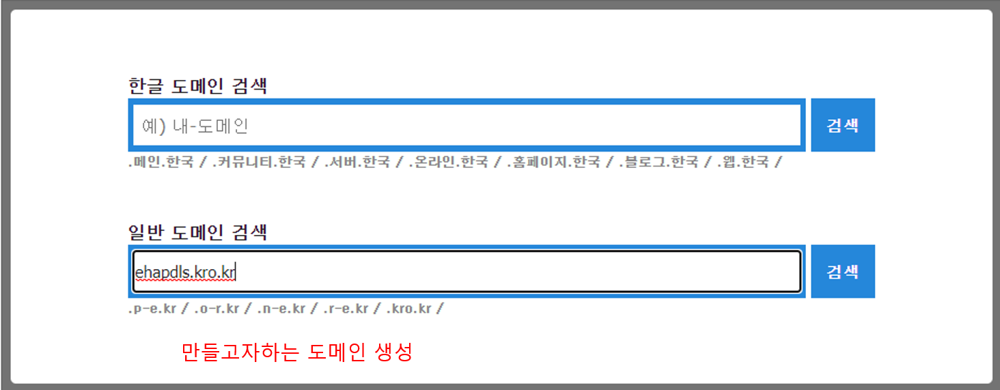
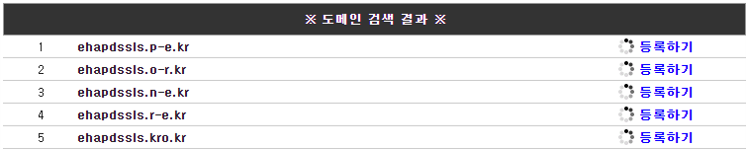
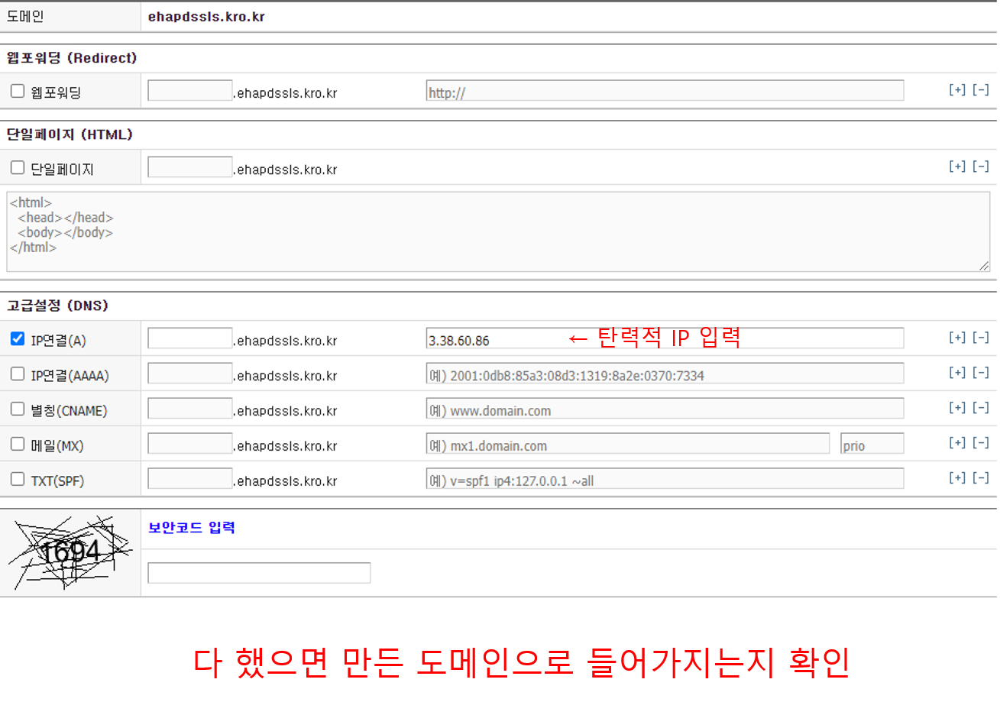
3-2 SSL 인증서 발급
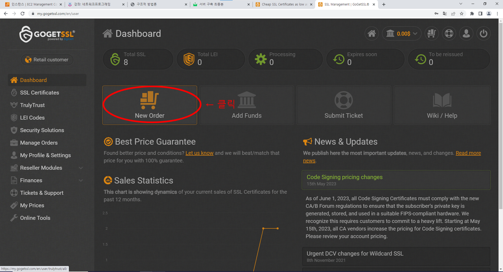
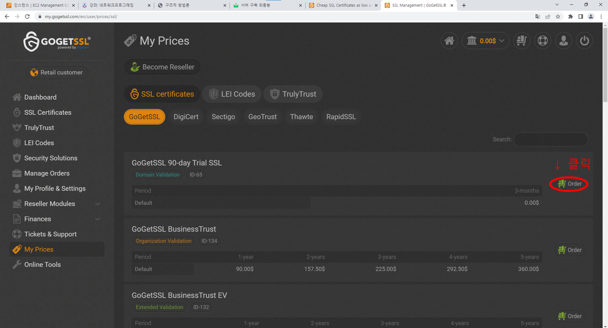
90일 무료 SSL을 사용합니다.
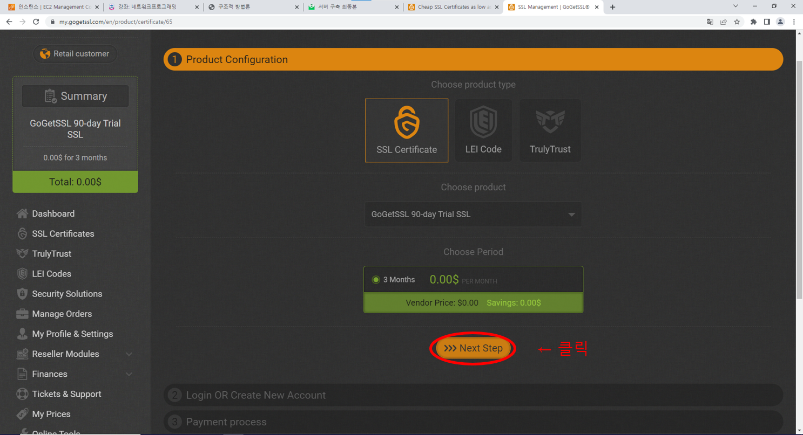
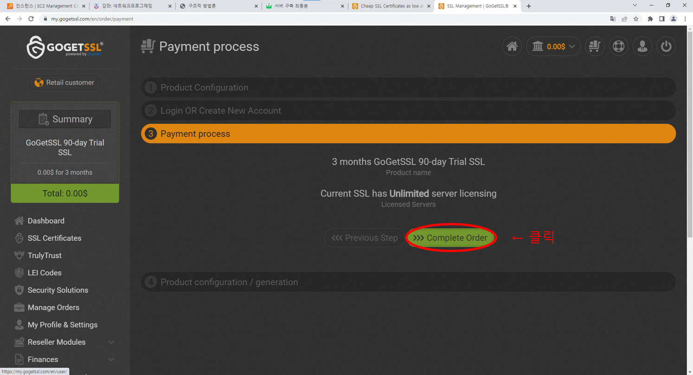
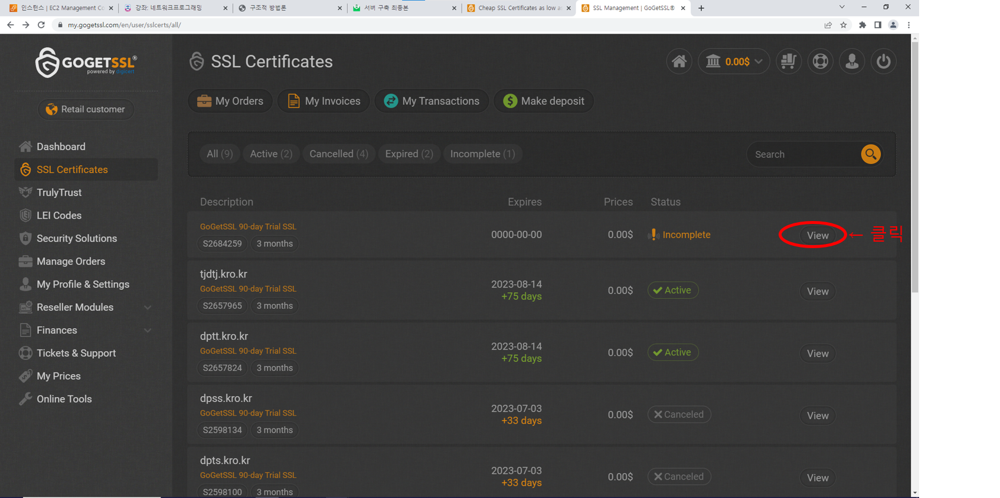
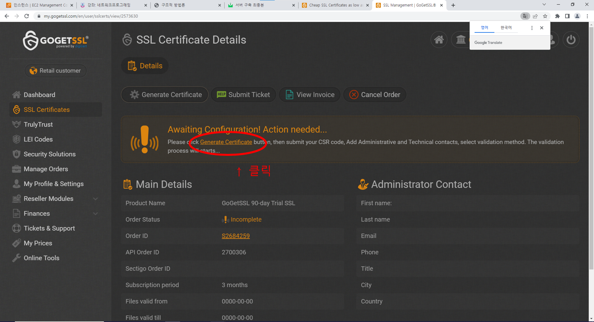
CSR 파일이 보안인증서 입니다.
보안인증서 자체가 침입당하는걸 방지하기 위해서 Private 코드를 발급을 받아야합니다.
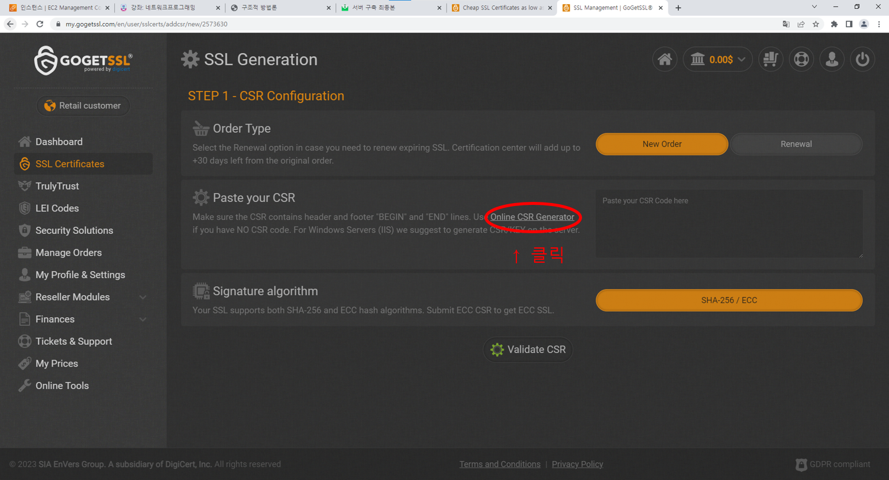
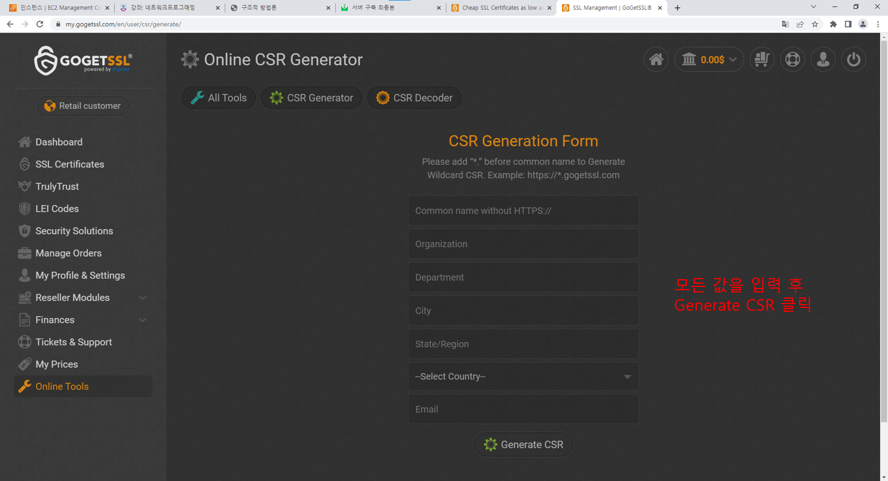
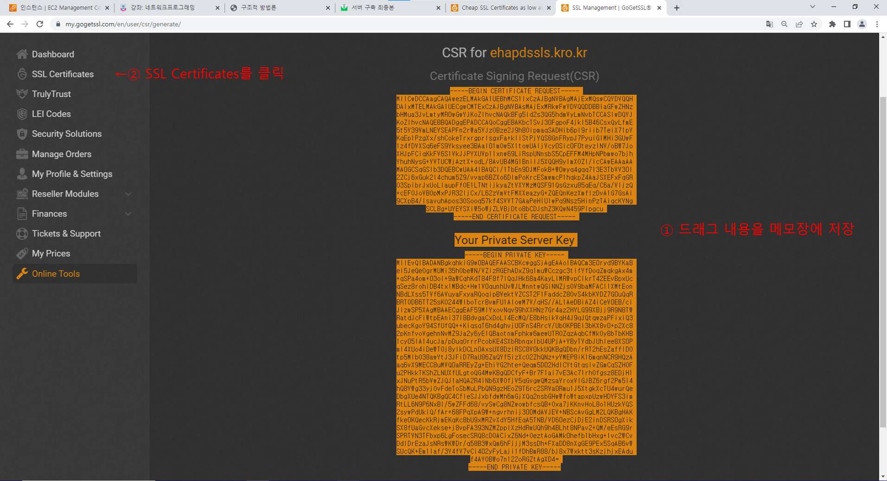
BEGIN CERTIFICATE REQUEST는 인증서 발급을 위해 필요한 정보를 담고있는 데이터 입니다.
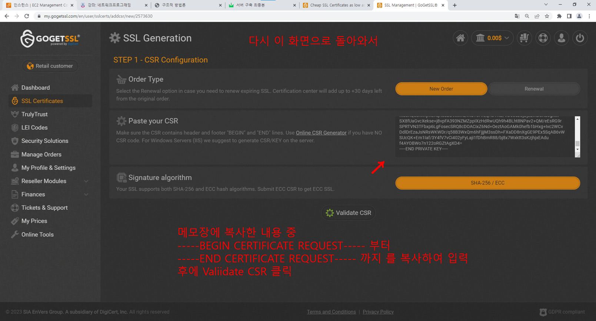
DPTS